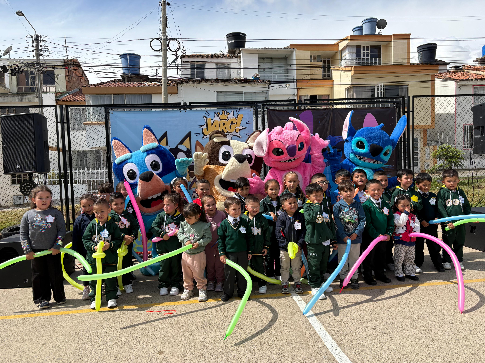
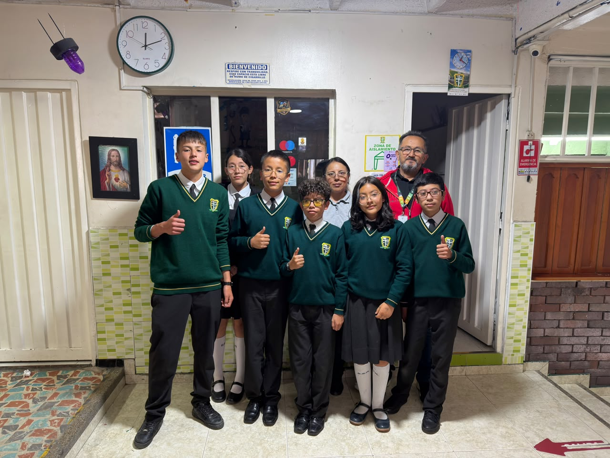

01Primeros pasos
Preescolar
Aprendizaje a través del juego, grupos pequeños y las bases del inglés desde transición.
- Aprender jugando
- Grupos pequeños
- Inglés desde transición
Inicio Oferta académica
Formación académica
Desde preescolar hasta bachillerato, acompañamos a cada estudiante con un modelo que combina rigor académico, bilingüismo real y formación en valores.
Niveles educativos
Cada nivel tiene su propio enfoque, pero comparte el mismo acompañamiento cercano.

01Primeros pasos
Aprendizaje a través del juego, grupos pequeños y las bases del inglés desde transición.
 02
02
Bases sólidas
Lectura crítica, pensamiento lógico-matemático y primeros proyectos de ciencia y tecnología.
 03
03
Rumbo al futuro
Preparación para las Pruebas Saber 11° y articulación con universidades aliadas.

Nuestro enfoque
Conectamos cada tema con la vida real del estudiante, para que lo aprendido perdure.
Inglés como segunda lengua, integrado en las asignaturas desde preescolar.
Los estudiantes resuelven retos reales y presentan resultados concretos.
Un equipo de orientación hace seguimiento cercano al bienestar de cada niño y joven.
Convenios y énfasis
Énfasis técnico en sistemas y programación
Formación musical y cultural
Convenios con UPTC, SENA y más
Entre los mejores ICFES de Tunja
Agenda una visita y resuelve todas tus dudas sobre el nivel que más le conviene a tu hij@.
Agendar visita